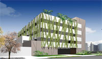
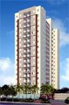

Breves Lançamentos
Sena Madureira Comercial - Vila Mariana, São Paulo.
Incrível e inovador projeto comercial da construtora e incorporadora Even, na área nobre da Vila Mariana, entre a Rua Sena Madureira e a Rua Mairinque. Com 132 salas de 31,84 m² à 72,87 m² com salas duplex e junções de até 439 m² num terreno de mais de 2500 m². Alto padrão de construção, decorado e com projeto de paisagismo, na melhor localização, apenas à 500 metros da estação do metro Vila Mariana. Empreendimento com uma torre comercial e uma torre garagem, dispondo de 3 elevadores.
Saúde Residencial, São Paulo.
O apartamento que você procura, agora no bairro que sonhava.Portugal - Brooklin, São Paulo.
Campo Bello Office, São Paulo.
- 01 torre.
- 06 elevadores.
- Salas comerciais de 38 à 52m².
- Junções de até 320 m².
- 2000 m² de terreno.
- Localizado na esquina da avenida Santo Amaro x Carlo Prina.
Park Club - Bairro Jardim, Santo André.
- 04 torres | 02 elevadores por torre. 16 pavimentos.
- Terreno de 16.973 m².
- Apartamentos de 64 à 73m² com churrasqueira na varanda.
- Salão de festas e de fitness.
- Solarium e piscina adulto e infantil.
- Playground e praça, churrasqueira com forno de pitza.
- Quadra de esportes. Brinquedoteca com depósito, fraldário e WC.
- Salão de jogos com depósito.
- Localizado na Avenida Industrial, 1580, em Santo André.